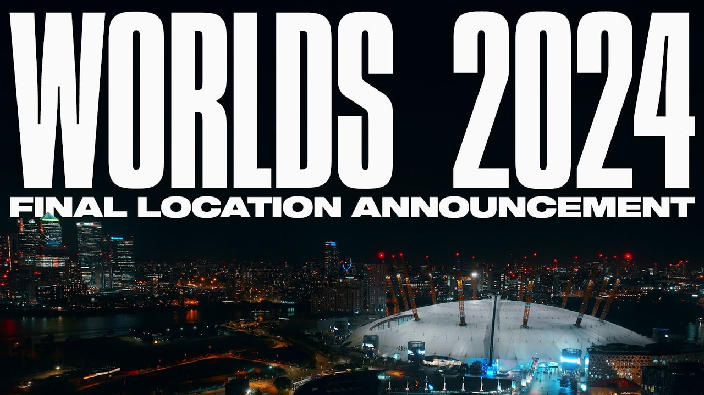

League of Legends World Championship
El Campeonato mundial de League of Legends (en inglés, League of Legends World Championship), también conocido como Worlds, es un torneo anual de League of Legends organizado por Riot Games y que supone la culminación de cada temporada. Los equipos compiten por el título de campeón, la Copa del Invocador, y un premio de varios miles de dólares. El torneo ha sido ampliamente elogiado por sus actuaciones ceremoniales, además de recibir una alta atención mediática debido a su naturaleza emocional y dramática. Las finales de 2018 fueron vistas por 99.6 millones de personas, rompiendo el récord de la edición anterior.
Worlds 2024
LoL World Championship 2024 (Worlds 2024) es la decimocuarta edición de la serie de torneos Worlds. La épica 14ª temporada de LoL, organizada por Riot Games, tendrá lugar en octubre de 2024 y reunirá a 22 de los mejores equipos de todo el mundo. En esta página hemos reunido toda la información necesaria sobre LoL Worlds 2024. Infórmate sobre la fecha y el lugar del campeonato, el calendario de Worlds 2024, los participantes, la bolsa de premios y el formato del torneo principal de la temporada.

Fecha y sedes de Lol Worlds 2024
Riot Games ha anunciado la sede del Campeonato Mundial de LoL 2024 (Worlds 2024) el último día de Worlds 2023. El evento final de la temporada 14 de LoL tendrá como sede el Reino Unido, y la Gran Final de Worlds 2024 se jugará en el O2 Arena de Londres. La fecha de Worlds 2024 aún se desconoce, pero el Campeonato Mundial de League of Legends se celebrará definitivamente entre octubre y noviembre de 2024.